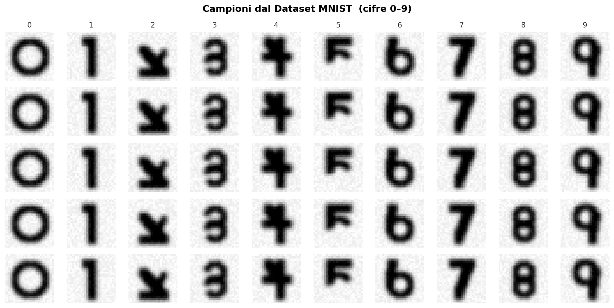

Laboratorio 12
Il Dataset MNIST — Parsing CSV, Batch e OpenCV
Soluzione del Laboratorio 11
Il Factory Method che ricostruisce un layer dallo stream:
E il caricamento polimorfico, con il puntatore protetto subito:
Chi ha visto numeri vicini ma non identici nel round-trip ha dimenticato os.precision(17).
Obiettivo di Oggi
Basta con Matrix::Random. Oggi la rete riceve dati veri: 60.000 cifre scritte a mano.
Costruiamo tre file:
dataset.hpp— l’interfaccia astratta e la strutturaBatchmnist_dataset.hpp— il caricatore CSV concretoopencv_wrap.hpp— per guardare con gli occhi quello che la rete legge
Note
Sul tempo. Oggi si scrivono circa 150 righe: è uno dei tre laboratori densi del corso, con il 9 e il 13. L’ordine dei Task è quello della catena dei dati — file, elemento, normalizzazione, batch — e ogni Task è verificabile da solo. Se il Task 8 (collegare il dataset alla rete) resta a casa, non perdete nulla: il Lab 13 ripartirà da lì.
Task 1: Batch e BaseDataset
Crea dataset.hpp. Prima la struttura che viaggia dal dataset alla rete:
Poi l’interfaccia astratta, perché domani il dataset potrebbe essere Fashion-MNIST o CIFAR:
template <typename ntype>
class BaseDataset {
protected:
bool z_score = false;
public:
virtual ~BaseDataset() = default;
virtual void reset_and_shuffle(bool shuffle = true) = 0;
virtual bool has_next_batch() const = 0;
virtual Batch<ntype> get_next_batch() = 0;
virtual int get_num_batches() const = 0;
virtual std::vector<ntype> get_mean() const = 0;
virtual std::vector<ntype> get_std() const = 0;
void set_z_score(bool b) { z_score = b; }
// Punto di estensione: un dataset può dichiarare di voler
// il label smoothing. Di default no.
virtual bool isLabelsmoothingEnabled(void) { return false; }
};L’ultimo metodo non fa nulla di utile oggi, e va bene così: è un punto di estensione. Il label smoothing consiste nell’ammorbidire i target (invece di 0.99 per la classe giusta si usa, per esempio, 0.9 distribuendo il resto sulle altre) per evitare che la rete diventi troppo sicura di sé. Chi sceglie la traccia sull’augmentation lo troverà già agganciato.
È lo stesso pattern di layer<ntype>: un contratto astratto, e implementazioni concrete che il resto del codice non deve conoscere.
Il formato CSV
label,pixel0,pixel1,...,pixel783 <- riga di intestazione, da saltare
5,0,0,0,32,143,255,210,...
0,0,0,0,0,0,12,...Ogni riga: la cifra vera, poi 784 valori da 0 a 255 (l’immagine 28×28 serializzata riga per riga — la stessa indicizzazione row-major della vostra Matrix del Lab 05).
Come appaiono le cifre

Task 2: L’elemento del dataset
Un dettaglio di progetto che sembra minore e non lo è: i pixel si conservano come interi grezzi, non come ntype normalizzati.
E nella classe: std::vector<mnist_dataset_elem<int>> ds;
Perché int e non double? 60.000 immagini × 784 pixel × 8 byte fanno 376 MB in doppia precisione. In int sono 188 MB, e su short sarebbero 94. La normalizzazione costa una moltiplicazione al momento del batch: è un ottimo scambio.
Task 3: Il parsing del CSV
void load_csv(const std::string& fn, int maxelem = -1) {
std::fstream f;
f.open(fn);
std::string linea;
std::getline(f, linea); // salta l'intestazione
ds.clear();
nl = 0;
pixs.resize(Nin, 1);
pixs.setConstant(0);
while (std::getline(f, linea)) {
std::stringstream ss(linea);
std::string valore;
// il primo campo è la label
std::getline(ss, valore, ',');
val = std::stoi(valore);
// tutti i restanti sono pixel
np = 0;
while (std::getline(ss, valore, ',')) {
pixs(np, 0) = std::stoi(valore);
np++;
}
add_element(pixs, val);
pixs.setConstant(0);
nl++;
if (maxelem > 0 && nl >= maxelem) break;
}
}Il doppio getline è l’idioma della Lezione 11: quello esterno con '\n' implicito prende la riga, quello interno con ',' prende i campi. Il maxelem serve durante lo sviluppo: caricare 1.000 righe invece di 60.000 rende ogni prova istantanea.
Task 4: Normalizzazione — e perché non [0, 1]
Qui il framework fa una scelta precisa, e va capita:
I pixel finiscono in [0.01, 0.99], non in [0, 1]. Il motivo è la sigmoide: un input esattamente 0 azzera il contributo di quel peso al gradiente, e un peso che riceve sempre 0 non viene mai aggiornato. Lo 0.01 garantisce che ogni pixel abbia sempre una voce, anche minima.
Note
dse.pixels.template cast<ntype>() — quel template in mezzo non è un errore di stampa. Serve quando si chiama un metodo template su un oggetto il cui tipo dipende da un parametro template: senza, il compilatore interpreta < come “minore di”.
Task 5: I target — la stessa logica
Simmetricamente, il target non è un one-hot 0/1:
if (targ_pm_one) {
// se l'ultimo layer è una tanh, che produce valori in (-1, 1)
b.targets.setConstant(static_cast<ntype>(-0.99));
b.targets(dse.val, 0) = static_cast<ntype>(0.99);
} else {
// se l'ultimo layer è una sigmoide, che produce valori in (0, 1)
b.targets.setConstant(static_cast<ntype>(0.01));
b.targets(dse.val, 0) = static_cast<ntype>(0.99);
}Chiedere alla sigmoide di produrre esattamente 1.0 significa chiederle \(z \to +\infty\): i pesi crescerebbero senza limite inseguendo un obiettivo irraggiungibile, e la derivata \(\sigma(1-\sigma)\) tenderebbe a zero proprio mentre l’errore resta. Con 0.99 l’obiettivo è raggiungibile e il gradiente resta sano.
È lo stesso ragionamento sulla saturazione della Lezione 2, applicato all’altro capo della rete.
Task 6: Batch e shuffle
Attenzione a una scelta del framework che sorprende: il batch ha dimensione 1.
Batch<ntype> get_next_batch(void) override {
Batch<ntype> b;
b.inputs.resize(Nin, 1); // <- una colonna sola
b.targets.resize(Nout, 1);
int real_idx = indices[current_batch_idx];
mnist_dataset_elem<int> dse = ds[real_idx];
current_batch_idx++;
// ... normalizzazione e target come sopra ...
return b;
}Un campione per aggiornamento: è Stochastic Gradient Descent puro, la strategia del libro di Rashid. Converge in poche epoche su MNIST, e rende la formula del gradiente più semplice (nessuna media su N).
Lo shuffle usa Fisher-Yates su un vettore di indici, non sui dati:
std::swap(a, b) scambia due valori (vive in <utility>, che avete già incluso indirettamente); indices va riempito una volta con 0, 1, 2, … — std::iota(indices.begin(), indices.end(), 0) da <numeric> fa esattamente questo.
Permutare 60.000 interi costa niente; permutare 60.000 immagini costerebbe 188 MB di copie a ogni epoca.
Task 7: Verificare con OpenCV
Un loader che legge i pixel nell’ordine sbagliato produce immagini illeggibili — ma la rete “impara” comunque qualcosa, e l’errore passa inosservato per giorni. Si verifica guardando.
Aggiungete opencv_wrap.hpp (fornito dal docente): incapsula cv::Mat e offre from_buffer(), to_buffer(), la visualizzazione e le rotazioni che serviranno per l’augmentation. I metodi di MnistDataset che lo usano — show, show_elem, save_elem e il caricamento da file PNG — sono codice fornito: li trovate nell’appendice in fondo, da incollare così come sono. Sono plumbing OpenCV, non C++ da imparare, e serviranno anche nel Lab 16.
Il test minimo: costruite a mano un’immagine con una croce e verificate che appaia come una croce.
Se sullo schermo vedete una croce e non due segmenti sparsi, l’indicizzazione riga * 28 + colonna è corretta.
Poi la verifica vera: visualizzate 3 immagini reali del dataset e controllate che la cifra che vedete corrisponda alla label stampata.
Task 8: Collegare il dataset alla rete
int main() {
rng.seed(42);
MnistDataset<double> train("mnist_train.csv", 1000);
std::cout << "Campioni caricati: " << train.get_num_batches() << std::endl;
Sequential<double> net;
net.add(std::make_unique<DenseLayer<double>>(200, 784, 1, 1)); // Xavier, gauss
net.add(std::make_unique<SigmoidLayer<double>>());
net.add(std::make_unique<DenseLayer<double>>(10, 200, 1, 1));
net.add(std::make_unique<SigmoidLayer<double>>());
train.reset_and_shuffle();
Batch<double> b = train.get_next_batch();
Matrix<double>& out = net.forward(b.inputs);
std::cout << "Predizione:\n" << out.transpose() << std::endl;
std::cout << "Target:\n" << b.targets.transpose() << std::endl;
}Cosa aspettarsi: dieci valori tutti intorno a 0.5, e un target con un solo 0.99. La rete non ha ancora imparato niente — non sa nemmeno che esista un errore da correggere. È il compito del prossimo laboratorio.
Cosa c’è nella soluzione che non avete scritto
Il mnist_dataset.hpp di riferimento è lungo circa il doppio del vostro. La differenza è tutta codice fornito, in tre gruppi:
| gruppo | metodi | perché è fornito |
|---|---|---|
| Visualizzazione e PNG | show, show_elem, save_elem, getelem, load_images, add_image_from_file, costruttore da lista di file |
plumbing OpenCV; serve oggi (Task 7) e nel Lab 16 — appendice |
| Augmentation | augmentation(), random_augment(), i membri aug_mode, aug_prob, maxAngle, … e i rami aug_mode in get_next_batch |
~90 righe di manipolazione di immagini: è la traccia 3 dei progetti e uno studio opzionale del Lab 15 |
| Utilità | clear_dataset, init_mnist_dataset, set_targ_pm_one, means/stds per lo z-score |
comodità e varianti che non cambiano il disegno |
Il primo gruppo lo incollate oggi. Il secondo lo prenderete dalla soluzione quando vi servirà. Il terzo potete ignorarlo: get_next_batch funziona anche senza. Il vostro dataset e quello di riferimento devono coincidere in ciò che conta — load_csv, normalizzazione, target, shuffle, batch — e lì non c’è nulla di fornito.
Appendice — Codice fornito (1): visualizzare
Serve un membro opencv_wrap img; inizializzato con img = opencv_wrap(28, 28); nel costruttore. Poi, dentro MnistDataset, così come sono:
mnist_dataset_elem<int>& getelem(int i) { return ds[i]; }
void show(Matrix<int>& pixs, int bc = 0) {
img.from_buffer(pixs.col(bc).data());
img.display();
}
void show_elem(int t = 0) {
int tlen = ds.size();
if (t < tlen) {
img.from_buffer(getelem(t).pixels.data());
img.display();
}
}
void save_elem(int t = 0) { // su disco, per guardarla dopo
int tlen = ds.size();
std::string s;
if (t < tlen) {
img.from_buffer(getelem(t).pixels.data());
s = "mnist-" + std::to_string(t) + ".png";
img.save_image(s);
}
}Appendice — Codice fornito (2): cifre da file PNG
Nel Lab 16 darete alla rete cifre scritte da voi. Un secondo costruttore prende una lista di file invece del CSV; la label è -1 perché non c’è.
void add_image_from_file(const std::string& fn) {
Matrix<int> pixs;
pixs.resize(Nin, 1);
pixs.setConstant(0);
img.load_from_file(fn, true); // true: sfondo bianco da invertire (le cifre MNIST sono chiare su nero)
img.to_buffer(pixs.data());
int val = -1;
add_element(pixs, val);
}
void load_images(std::vector<std::string>& images) {
for (auto fn : images) add_image_from_file(fn);
nl = ds.size();
std::cout << "Lette " << nl << " immagini" << std::endl;
indices.resize(ds.size());
std::iota(indices.begin(), indices.end(), 0); // <numeric>
}
MnistDataset(std::vector<std::string>& images)
: aug_mode(0), aug_prob(0.5), current_batch_idx(0) {
init_mnist_dataset(); // img = opencv_wrap(28, 28); Nin = 784; Nout = 10; ...
load_images(images);
}Se non avete i membri aug_mode/aug_prob, togliete i due inizializzatori: sono dell’augmentation.
Task da Completare
La soluzione di riferimento verrà discussa all’inizio della prossima lezione.